The Sermon On The Mount: The Beatitudes
And seeing the multitudes, he went up into a mountain: and when he was set, his disciples came unto him:
And he opened his mouth, and taught them, saying,
Blessed are the poor in spirit: for theirs is the kingdom of heaven.
Blessed are they that mourn: for they shall be comforted.
Blessed are the meek: for they shall inherit the earth.
Blessed are they which do hunger and thirst after righteousness: for they shall be filled.
Blessed are the merciful: for they shall obtain mercy.
Blessed are the pure in heart: for they shall see God.
Blessed are the peacemakers: for they shall be called the children of God.
Blessed are they which are persecuted for righteousness' sake: for theirs is the kingdom of heaven.
Blessed are ye, when men shall revile you, and persecute you, and shall say all manner of evil against you falsely, for my sake.
Rejoice, and be exceeding glad: for great is your reward in heaven: for so persecuted they the prophets which were before you.
Matthew 5:1-12
- 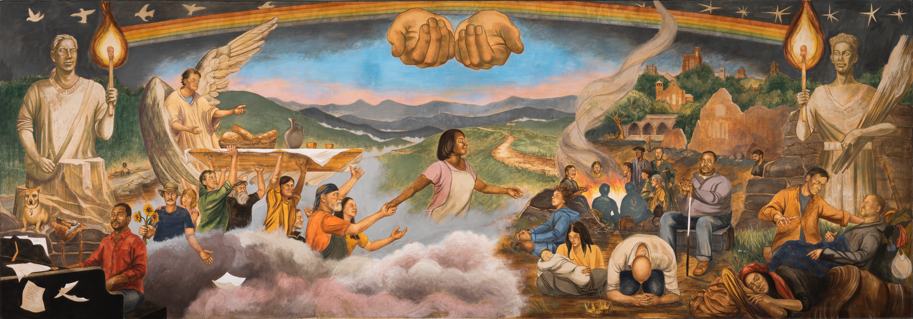
- 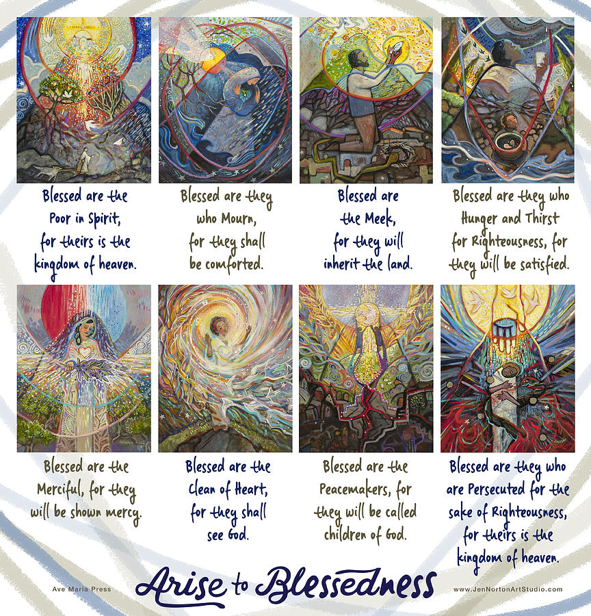
- 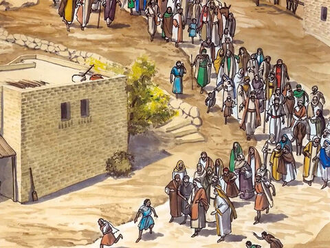
- 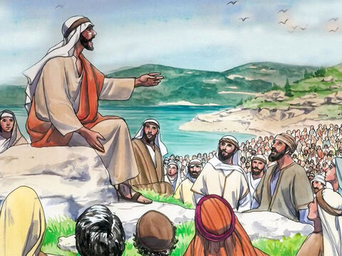
- 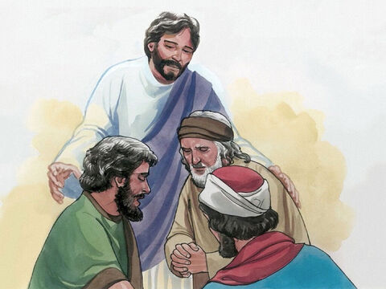
- 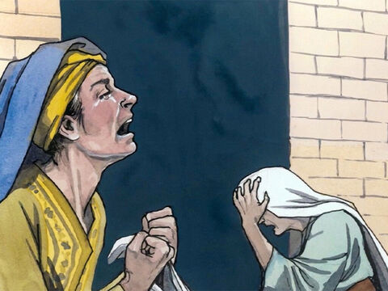
- 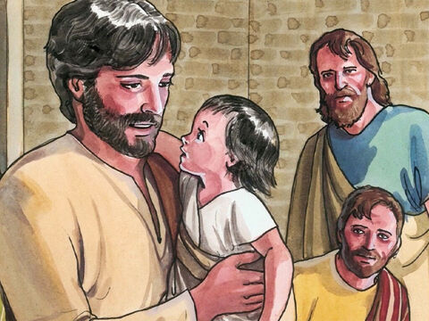

- 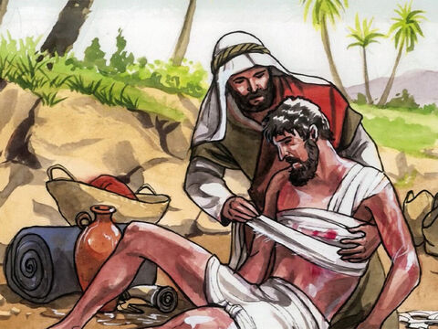
- 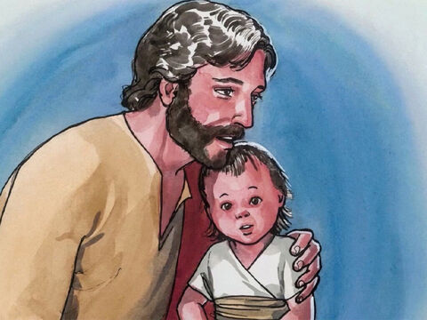
- 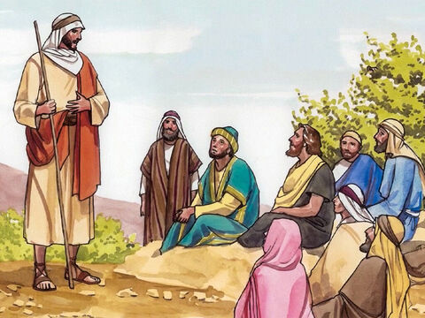
- 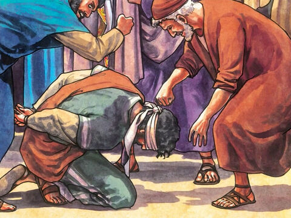
- 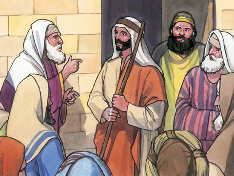
- 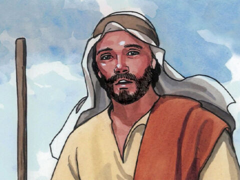